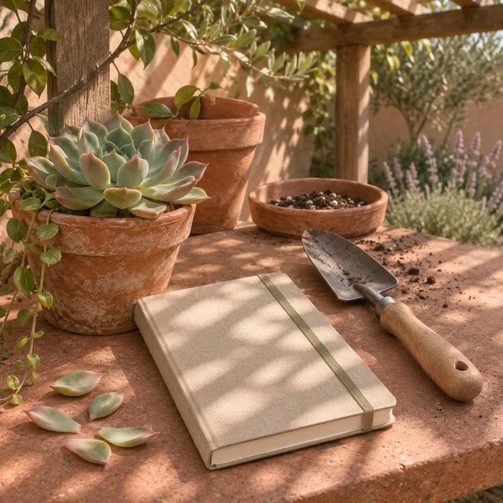
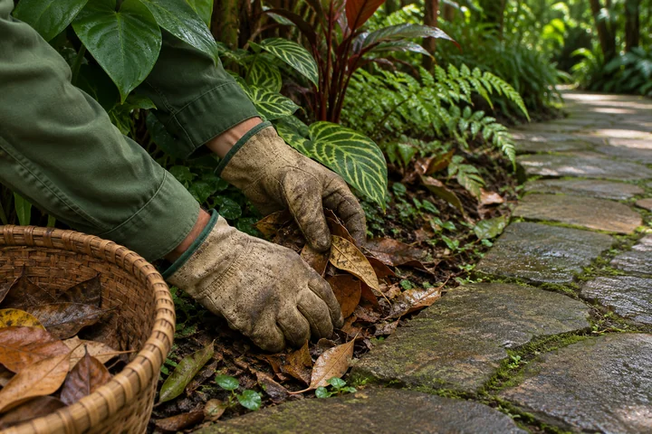

O que entra na rotina de cuidado.
Explore três combinações de visitas e prepare a conversa sobre a manutenção do seu jardim.

Quatro semanas de exemplo
- Semana 1Observação
- Semana 2Entre visitas
- Semana 3Entre visitas
- Semana 4Revisão do jardim
Uma revisão no exemplo de quatro semanas.
Visita pontual
Para olhar um ponto que precisa de atenção e entender se basta uma intervenção.
- O que combinar
- Avaliação inicial
- O que observar
- Canteiro, vasos e folhas acumuladas
Revisão mensal
Uma forma de acompanhar as mudanças no jardim, organizar pendências e conversar sobre a próxima visita.
- O que combinar
- Acompanhamento
- O que observar
- Estado dos canteiros e áreas de passagem
Cuidado semanal
Para quem quer conversar sobre uma presença mais frequente e ter um canal para apontar o que mudou entre as visitas.
- O que combinar
- Visitas recorrentes
- O que observar
- Canteiros, circulação e pontos de cuidado

O que vale mencionar na visita.
Canteiros e vasos
Mostre o que você quer preservar e o que mudou desde o último cuidado.
Caminhos e acesso
Indique os lugares de passagem, onde a equipe pode trabalhar e como entrar.
Água e rotina
Conte quem costuma cuidar do espaço e quais pontos de água estão disponíveis.